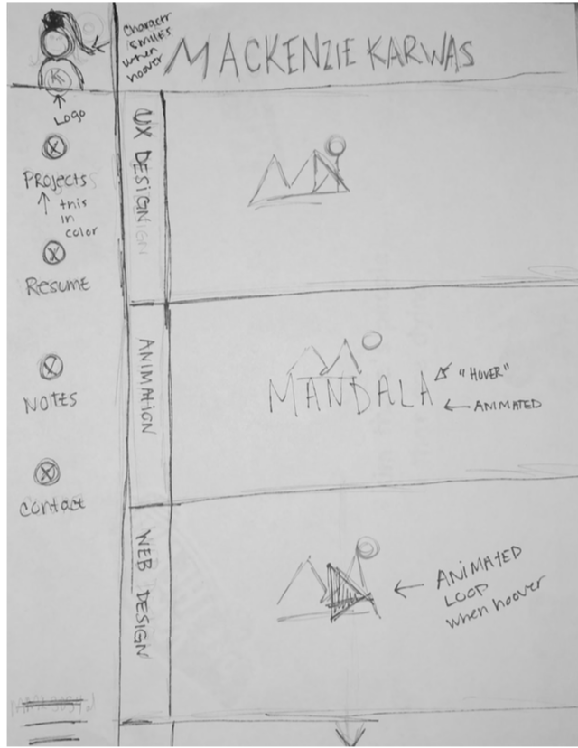

Documentation Page
Goals
To effectively communicate my design and skills to the person viewing my site. The should be able to get a sense of the type of designer i am. This is clean and classic with warm colors that include gradients. I like clean fonts, I tend to san serif fonts so the words are legible, clean and demonstrate a crisp look. Overall the goal is to display good design skills and for the user to easily be able to navigate through my site.
Audience
The intended audience is potential employers and professors. I would like to gear my site to fit those major categories because they provide the most opportunity for growth within the design community. If I make my website enjoyable for both parties I can find more opportunities and jobs which is the ultimate goal.
Design Decisions
I decided to use a pink gradient design scheme because this best reflects who I am as a designer. My grid choice was picked to reflect a unique style that you normally do not see from most design or portfolio websites The side bar stays fixed as well as the titlebar so that the user can constantly navigate through the site.
Wireframes
Sources
For my sources I started by using grid layouts from our exercise in class. I then modified the grid so it reflected my layout. I also used code pen for the hover jQuery in the first loading page. I used W3 schools for the looping animation as well. I used our first templete for the practice final for my notes page.
What changed?
From my first portfolio site a lot has changd. I now use gride layouts in every single page. I use grides inside of grides, for example my titlebar was not centering my name so I made a 3 column grid in there and set the two asides to the same length and the middle content to auto. Then i justified the content and aligned items to center to keep my name centered. I also changed my layout and design to reflect a unique style. My layout is no longer cookie cutter, it has unique attributes like the overflow scroll on the main page work. I also included video of my projects within the site as well. As for this site, I learned a lot more about grid and diffrent layouts, I did not do that before hand. I contnuioislly worked on this project for weeks and was able to fix errors I did not see before. I feel over all I have learned lot from this specific project.